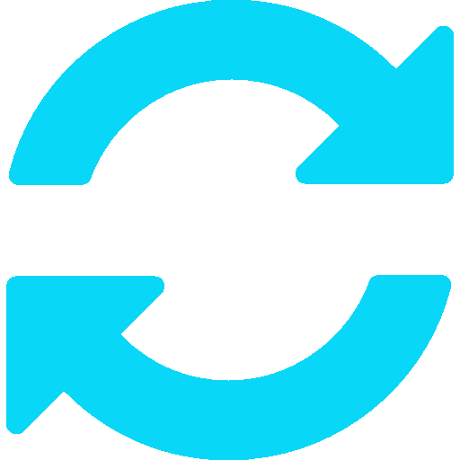

Escolha seu
Campeão
Encontre a combinação perfeita para seu estilo de jogo.
Especialize-se em um estilo ou em todos.

Annie
A criança sombria
-
Dificuldade
Moderado -
Função
Mago -
Rota sugerida
Meio -
Perigosa, mas adoravelmente precoce, Annie é uma pequena maga com imenso poder piromaníaco.
-
Habilidades: Piromania, Desintegrar, Incinerar, Escudo Fundido, Invocar: Tibbers
-
 Não está em Rotação Gratuita

Viego
O rei destruído
-
Dificuldade
Moderado -
Função
Assassino -
Rota sugerida
Selva -
Poderoso espectro morto-vivo que assola Runeterra em busca de trazer sua rainha de volta à vida.
-
Habilidades: Dominação Monárquica, Espada do Rei Destruído, Posse Espectral, Domínio Atormentado, Destruidor de corações
-
Está em Rotação Gratuita

Yuumi
A gata mágica
-
Dificuldade
Baixa -
Função
Suporte -
Rota sugerida
Inferior -
Guardiã do Livro dos Portais de Norra, viajando à procura de sua mestra através dos portais.
-
Habilidades: Bater e Bloquear, Projétil Errante, Você e eu!, Frenética, Capítulo Final
-
Está em Rotação Gratuita